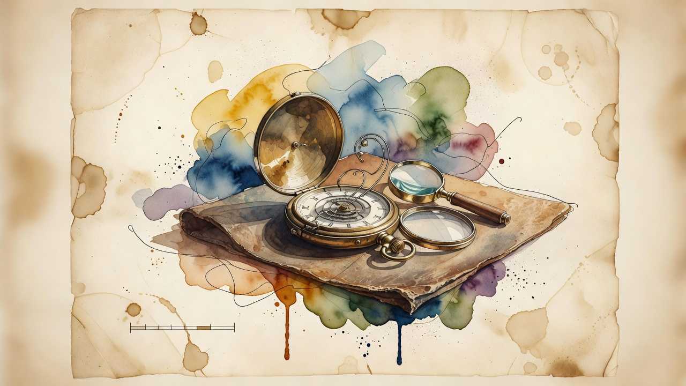

Pace the Frontier
Anthropic's Amodei urges the industry to slow frontier AI and opens its systems to third-party evaluators
Dario Amodei published an essay arguing the AI industry should pace frontier development, and announced Anthropic will unilaterally give third-party evaluators permanent employee-level access to its systems to verify safety measures, report incidents and assess alignment during training.